Connecting interview preparation into one journey
YeaHub is an online platform where IT specialists prepare for technical interviews. As its only designer for 2.5 years, I helped turn a question bank into a service that leads from first practice to a job offer — with separate tools for learners, mentors and admins.
YeaHub is a live product at yeahub.ru. Some screens there differ from the final designs: a small team prioritised features, and the project is now on pause. This case shows the designed screens.
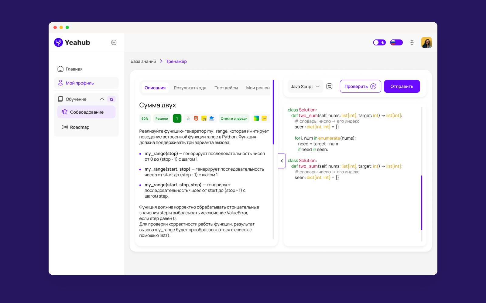
Summary
Objectives
- Turn scattered preparation into one path, from theory to a job offer.
- Make practice feel like a real interview and progress visible.
- Give learners, mentors and admins their own tools on one system.
Role
Sole UI/UX designer
Research, information architecture, UX/UI, prototyping, design system, handoff
Period & team
Mar 2024 – Nov 2026, part-time
Founder (CEO), about four developers, mentors
Key skills
Three product problems shaped the work
- 01Preparation was scatteredQuestions, theory, coding practice and job search lived in different places. Learners had material, but no path through it.
- 02Practice didn't feel realReading an answer is not the same as answering under pressure, and learners couldn't tell how ready they were.
- 03The product outgrew its interfaceNew roles and features kept arriving. Without shared components, screens started to look and behave differently.
Finding the gap
I interviewed two developers — a Junior and a Middle — about how they prepare and where they lose time, checked feature ideas with polls in the product's Telegram community, and reviewed five competing services screen by screen.
Every competitor offered separate tools. None connected the question bank, practice, progress, mentors and jobs into one route. That became the product's direction.
| Feature | YeaHub | sobes.techDirect | SolvitDirect | EasyAdviceDirect | HireHiAdjacent | 2RAdjacent |
|---|---|---|---|---|---|---|
| Question bank with filters | ||||||
| Real interview reports | ||||||
| Coding tasks | ||||||
| Interview practice | ||||||
| Progress tracking | ||||||
| Learning path / roadmap | ||||||
| Human mentors | ||||||
| Jobs & CV tools |
Limits. The interviews involved two developers from our own network, and the review covered public pages only, without flows behind sign-in.
Practise the way real interviews work
In the interview simulator, learners choose skills, difficulty and the number of questions, and whether to repeat known questions, see only new ones or mix them. Then they answer one question at a time and review their results — so practice feels like an interview, not like reading a list.
The first version hid choices behind dropdowns and radio buttons. In the version handed to developers, categories became visible chips, modes became labelled buttons and the number of questions got a simple minus/plus control.
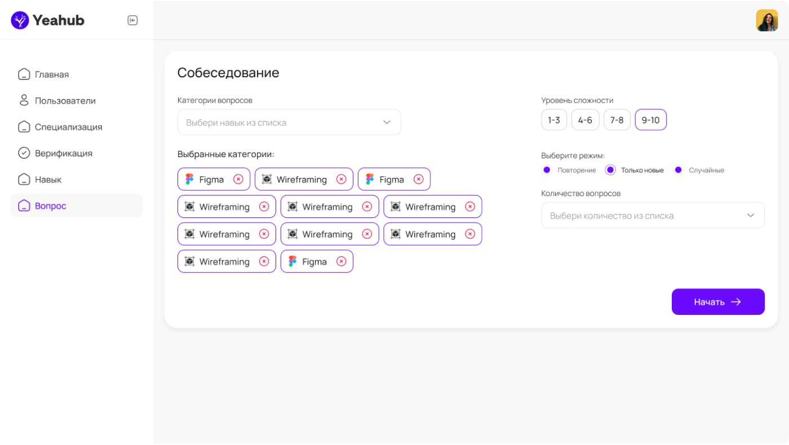
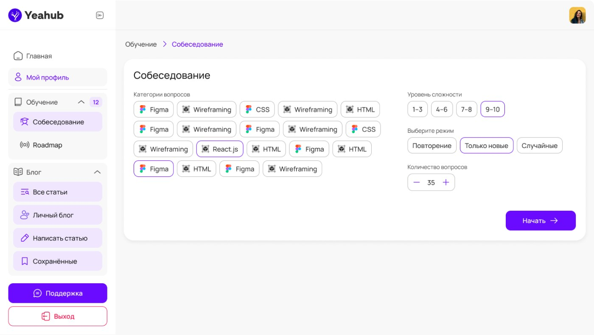
Turn reading into learning
The question page is where learners spend most of their time. In the draft, the Learn, Save, Revision and Skip actions sat in a side column, far from the answer — easy to miss while reading. I moved Learn and Repeat directly under the question, kept the short and detailed answers as separate sections, and specified that actions are disabled until the email is verified.
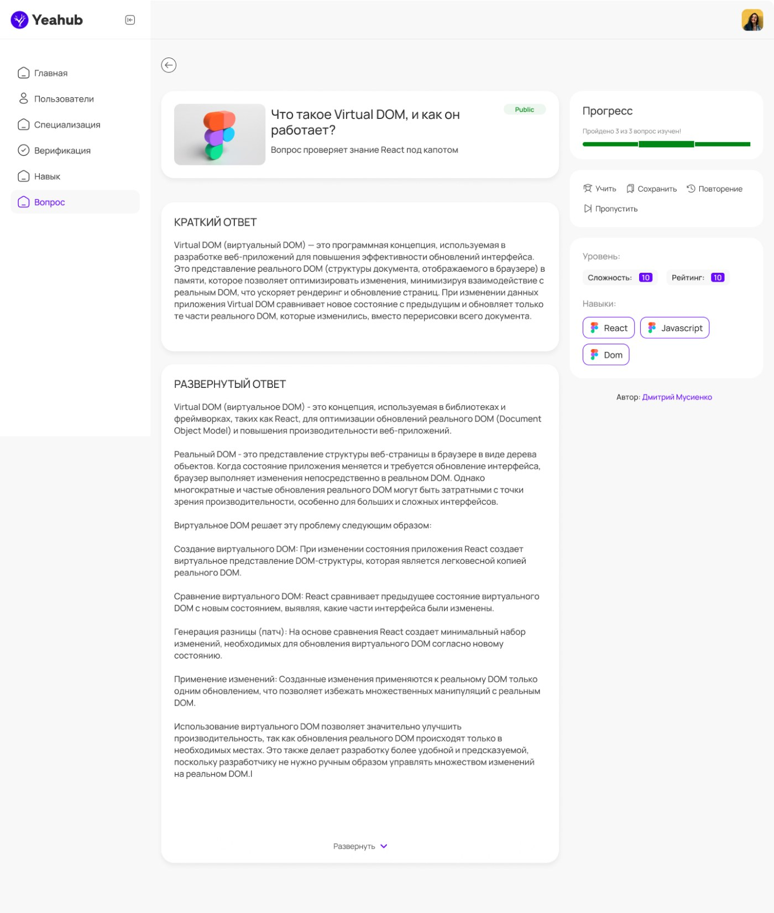
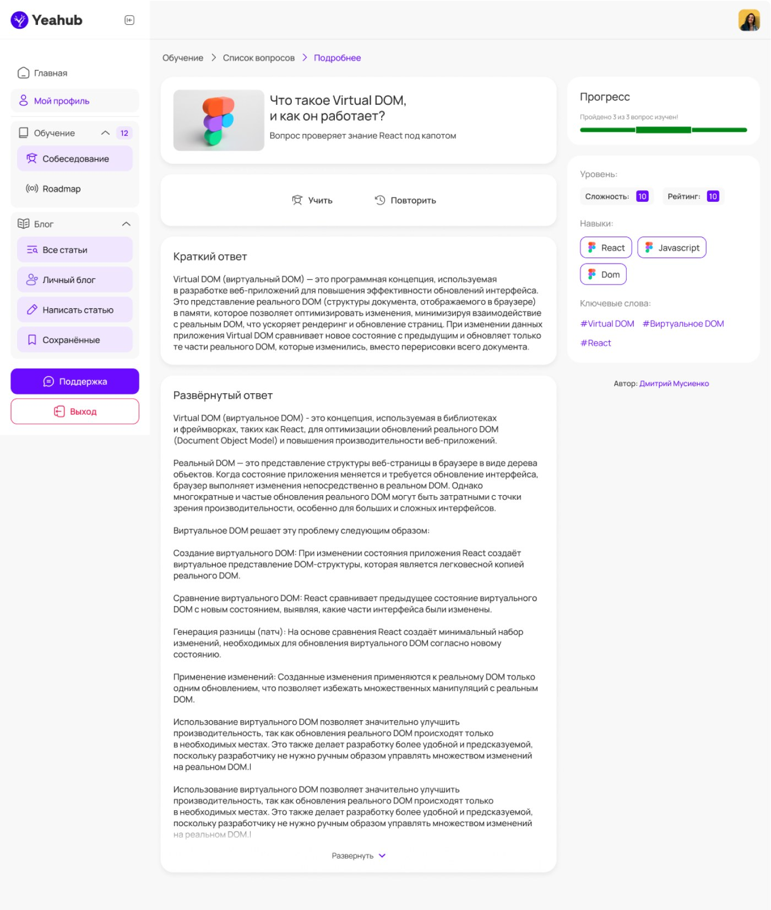
What still needs checking. This change comes from an expert review, not from a test. Next task for users: study an answer and schedule the question for revision.
Show progress learners can act on
The statistics page brings together completed interviews, studied questions, interview history and progress by skill — so learners see where they stand and what to revise next, instead of a single percentage.
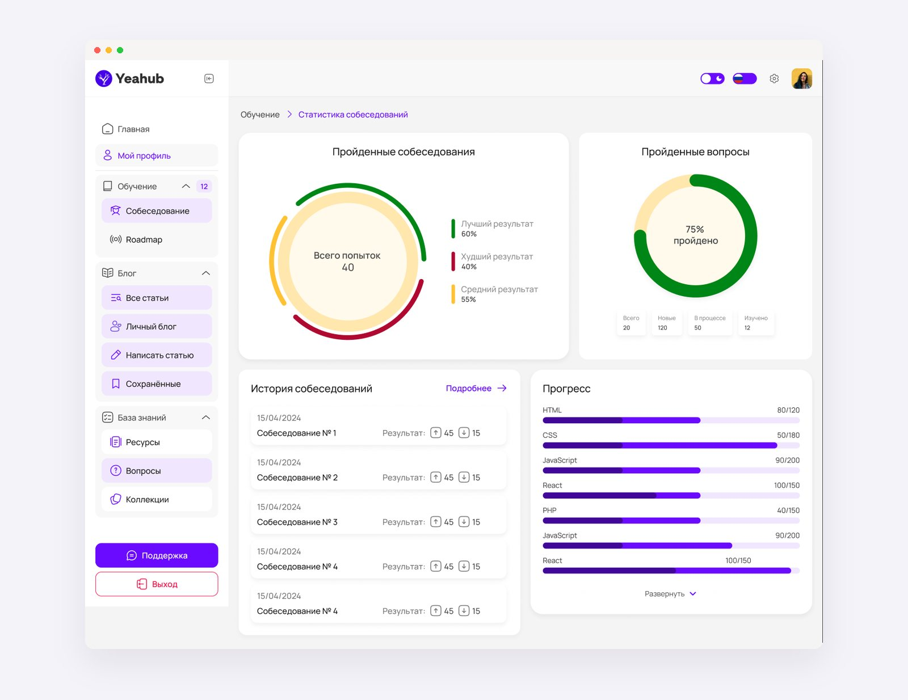
Check code, not just theory
Developers also need to write code under time pressure. The code trainer puts the task and the editor side by side, with test cases and the learner's own past solutions one tab away.
A deliberate trade-off. Theory answers use self-assessment, while coding tasks are checked automatically with test cases. This balanced learning goals with what the team could build.
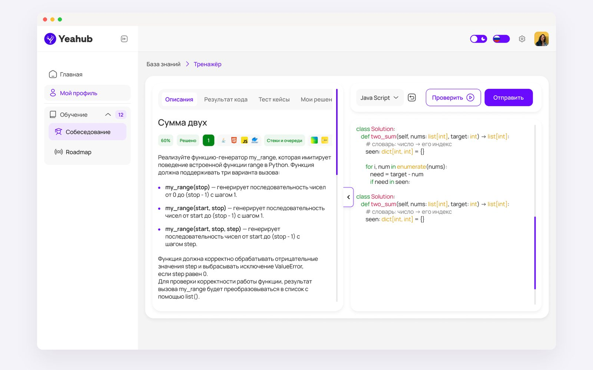
Testing with real users
Over two years I ran several moderated usability tests on different features. In the test of the core interview-prep flow, two developers completed six tasks each on the live product.
Both participants hesitated over the 1–3 and 4–6 levels.
Design decision: Explain the scale with familiar Junior / Middle / Senior labels.
The question title did not look clickable, so the detailed answer stayed hidden.
Design decision: Add an explicit “Detailed answer” call to action.
A global 0% conflicted with the session the participant had just completed.
Design decision: Show session results first, overall progress second, then the next action.
Both reached the paywall; the locked state confused one participant, and pricing was weakly connected to it.
Design decision: A persistent explanation and a “View plans” call to action.
Limits. With two participants, this was problem-finding, not a quantitative measure of usability. The fixes went into development.
One system for a growing product
I built the design system in Figma with a reuse-first approach: shared tokens and components — buttons, inputs, navigation, cards and tables — with loading, empty and error states, in light and dark themes. The same components carry the learner account, the mentor space and the admin panel, where the team manages questions, collections and skills.
For each feature, I specified states and edge cases and prepared a handoff area for developers, then reviewed the implementation with them.
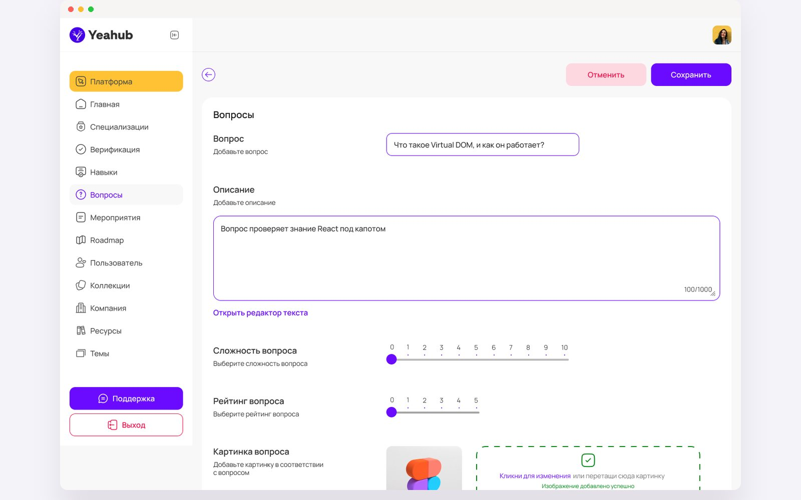
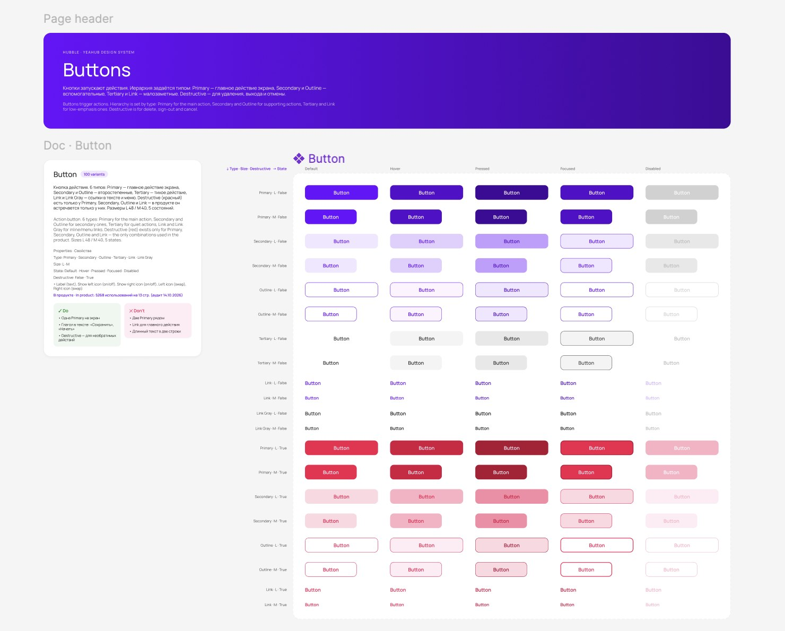
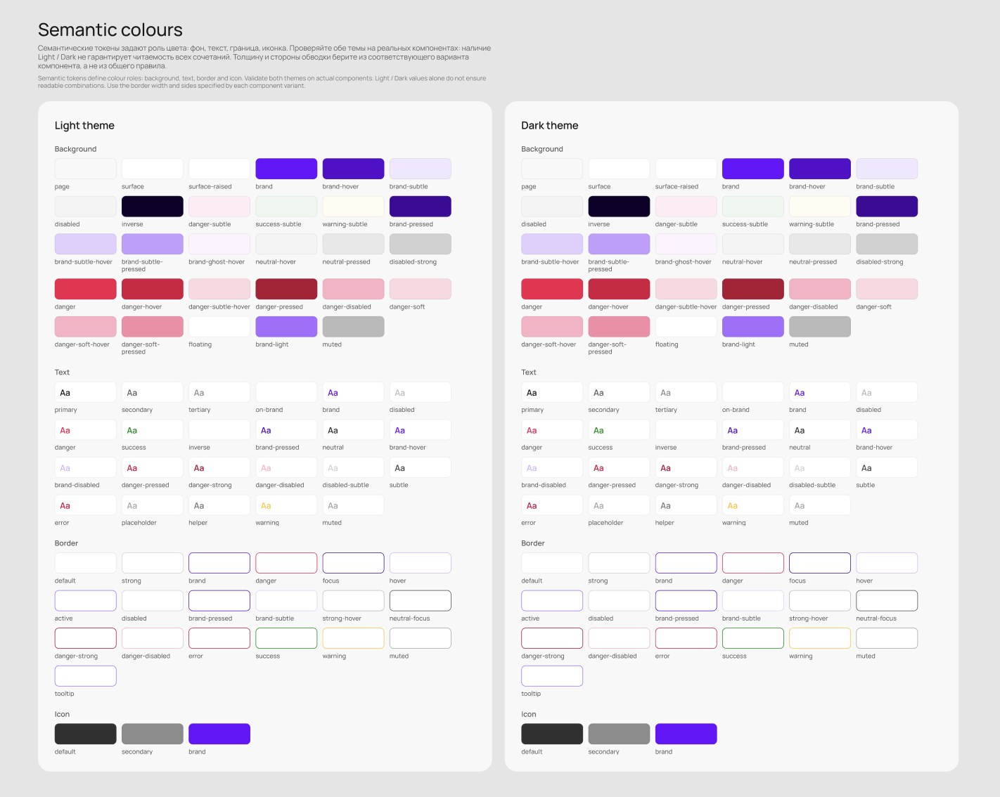
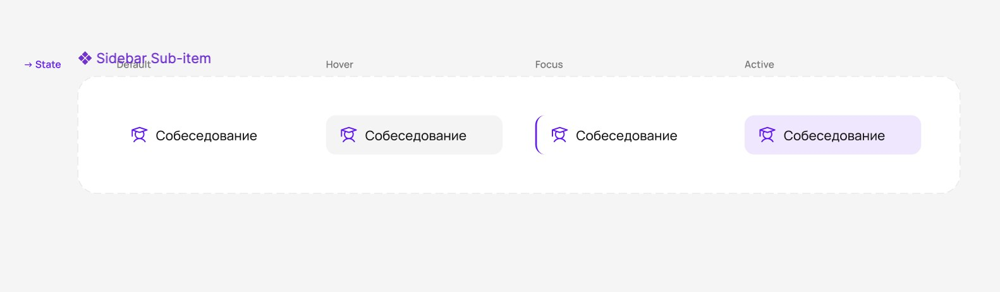
What I learned
Design the path, not the feature
Every new feature had to answer one question: where does it take the learner next?
Separate observations from evidence
Two interviews show problems, not proportions. I learned to say clearly what our data could and couldn't support.
Reach beyond your own network
Next time I would recruit participants outside our community earlier and define product metrics from the start.